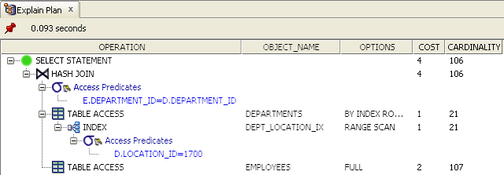
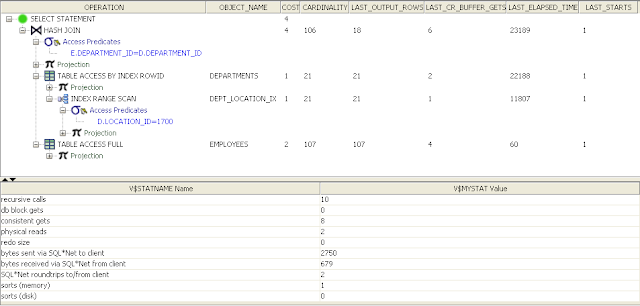

Introduction Link to heading
I have previously been asked to mentor developers and provide information regarding the Cost-Based Optimizer (CBO) within the Oracle database in work. I therefore decided to put together a simple introduction, which also ended up teaching me more about the CBO.
This introduction to the CBO is not meant as an all-encompassing guide or book. There are already several good and thorough books on the subject. The guide will however provide some fundamental information that may help developers getting started with, understanding and using the CBO.
With the advent of the Oracle Cost-Based Optimizer (CBO) since Oracle 7 and with the de-support of the Rule-Based Optimizer (RBO) from Oracle 10g and upwards, it is imperative that SQL code be written to utilise the CBO. This means that RBO constructs should no longer be used and that past RBO assumptions should no longer be made regarding how the Oracle optimizer deals with the planning and execution of SQL statements. Furthermore, over time, any rule-based SQL identified in existing code and scripts should be altered to take advantage of the CBO.
Apart from my own work with the CBO, this guide is largely based on available Oracle 9i Release 2 and 10g Release 2 documentation, as well as the invaluable book Cost-Based Oracle Fundamentals written by Jonathan Lewis [1]. It also references a significant amount of Oracle Support notes, which the reader is encouraged to read - assuming that the reader does have access to My Oracle Support (https://support.oracle.com/).
This guide will first brush on the subject of the RBO and why it should no longer be used. Then it will describe how the CBO works, how to use it and what to look out for. Finally the guide will provide some best-practice information and tips and tricks.
For simplicity, the examples provided are based on Oracle’s HR demo schema. Scripts for creating the demo schemas, including the HR schema, are up until 10g distributed with the database installation. With 11g the examples are distributed separately and can be downloaded from the Oracle Technet web site: http://www.oracle.com/technology/software/products/database/index.html. The reader will therefore be able to easily re-create the database environment that the examples have been based on.
However, bear in mind that due to a wide variety of factors including underlying hardware, operating system, block sizes, gathered system and segment statistics, a wide variety of database instance and session parameters etc it may be possible that results vary from database to database and system to system.
It is therefore left up to the reader, as an exercise, to verify findings made in this guide and apply critical thinking rather than take anything written at face value - this guide included. Also, of course, nothing beats learning by doing. Also, as I am sure that there are plenty of mistakes and incorrect assumptions in this guide I would encourage anyone finding such occurrences to contact me and let me know, thank you!
Finally, the examples provided were tested and results collected from the 10g database release (10.2.0.4 to be precise).
The Rule-Based Optimizer Link to heading
The rule-based optimizer (RBO) in the Oracle database implemented a very simplistic approach to determining the most optimal access path to a given table being accessed in a SQL statement by checking 15 access path options [2] and their eligibility depending on available indexes etc. The access path options would be ranked in order of preference - the lowest ranked would be preferred over the highest ranked. For instance an access path of single row by rowid (ranked 1) would be preferred over a full tablescan (ranked 15).
Because data-related statistics (distribution and selectivity of column data) are not available to help determine access paths and join order in the RBO it would have no other way of determining optimal join-order or join-type (e.g. sort-merge, nested loops and hash) than prioritise join-order by preference (rules heuristics) depending on the access path options available for each table.
For some SQL statements this has caused signficant performance problems because of the static heuristics employed by the RBO, which do not take into consideration data and data distribution. Developers would therefore “fix” the SQL statements by making index access paths to particular tables “impossible”, and in the process make other joins orders and types more favourable. This has traditionally been achieved by adding || '' to string column and + 0 to number column predicates.
In effect, this meant that the idea of SQL being a declarative language for accessing data, i.e. that the developer would specify what to retrieve and from where, but not how, would no longer hold true. A certain amount of “programming” around performance issues would be required by using the previously mentioned constructs in predicates.
Furthermore, as the Oracle database and the CBO evolved, many newly added access paths would be usable only by the CBO. The RBO would therefore not be able to take advantage of an increasing amount of new optimisation features employed in later database releases.
The Cost-Based Optimizer Link to heading
Background Link to heading
The RBO was previously described as following a strict and simplistic set of rules for determining the access paths, join types and join orders used to run a SQL statement. The cost-based optimizer determines the access paths, join types and join order by costing.
But how does the CBO function - and what does “costing” mean? Put simply, cost represents the optimizer’s best estimate of the amount of time it will take to execute a statement.
In order to provide an estimate of the amount of time a statement takes, the database will need to know how much I/O is required to satisfy a given statement. After all, I/O is typically the slowest performing component of computer architectures today - as opposed to access to data in main memory and cache.
To determine the amount of I/O required, the optimizer will need to have some kind of idea of how much data to bring back from tables because the amount of data directly impacts the amount of I/O required. This is where table and index statistics come in. Statistics help to determine the selectivity of data in individual tables, which in turn is dependent on cardinality. For instance, if we have a query that selects a particular department in a DEPARTMENTS table by a department identifier we can be reasonably sure that at most one row will be returned - after all there will likely be a unique index (if not primary key) on the department id column, which prevents multiple occurrences of a department id in the same table. Conversely, if we wish to look-up employees by department id in an EMPLOYEES table we may quite reasonably expect to have potentially many rows returned, i.e. all employees that work in a particular department.
Traditionally costing was solely a function of the estimated amount of I/O required in order to execute a statement. However since 9i (release 2) the CBO included CPU costing because a certain amount of CPU time would be required for e.g. tablescans, sorting and joining row sets. I.e. the amount of CPU time estimated to be required to execute a particular SQL statement plan, which can also potentially be quite substantial, could be taken into account as well if CPU costing was enabled. Time in this instance is not necessarily a fixed time unit (like milli-seconds) but depends instead on the underlying hardware platform - time “units” in terms of CPUs would be dependent on CPU cycles and the average amount of CPU cycles that can be executed per second, which in turn is related to the frequency of the CPUs and numerous other factors, including CPU cache, main memory timings, instruction set etc. However, for the purposes of calculating overall CPU cost, the number of CPU cycles is eventually normalised in accordance with “CPU speed” when a total cost of a statement is calculated.
According to the 9i Release 2 documentation [3] on performance tuning the CBO costing model, which takes into account both I/O and CPU costs, is calculated as follows:
*Cost = (#SRds * sreadtim + #MRds * mreadtim + #CPUCycles / cpuspeed ) / sreadtim*
Where:
#SRDsis the number of single block reads#MRDsis the number of multi block reads#CPUCyclesis the number of CPU Cyclessreadtimis the single block read timemreadtimis the multi block read timecpuspeedis the CPU cycles per second
In essence, what this formula tells us is that time spent on single-block reads + time spent on multi-block reads + CPU time and divided by single-block read time gives us the estimated cost of a particular statement.
The formula has since evolved in 10g and also takes into account access to the temporary tablespace for sorting and group-by for instance.
Since 9i Release 2 DBA’s have been advised to gather system statistics in each database in two sets - during normal operation and with a workload. The gathered system statistics can be found by querying internal database tables as follows (as SYSDBA) or by executing the DBMS_STATS.GET_SYSTEM_STATS procedure with each individual statistics attribute name displayed below:
SELECT pname, pval1
FROM aux_stats$
WHERE sname = 'SYSSTATS_MAIN';
PNAME PVAL1
------------------------------ ----------
CPUSPEED 1095
CPUSPEEDNW 1296.392
IOSEEKTIM 11.211
IOTFRSPEED 12764.76
MAXTHR 6528000
MBRC 8
MREADTIM 2.341
SLAVETHR
SREADTIM 2.426
As can be seen, these numbers provide the basis for the CBO costing formula from a system statistics perspective.
The CPUSPEED is measured in available (million) clock cycles per second (although in reality it is slightly more complex than this), i.e. in this case the system has nearly 1.3 billion CPU cycles per second (incidentally equivalent to 1.3Ghz CPU in this situation). It is worth mentioning that the CPUSPEED is calculated for a single CPU - not the system as a whole if there are multiple CPUs.
Cost presumably is based only on a single CPU (or core) because a particular Oracle process, which works on behalf of a particular user session, wouldn’t parallelise a given operation (SQL statement execution) - although this does not necessarily hold true with parallel execution slave processes.
The figures above state that average I/O seek time (i.e. time to find the data on the underlying I/O sub-system) is approximately 11.2ms, average MREADTIM (multi-block read time) is 2.3ms and average SREADTIM (single-block read time) is 2.4ms. The MBRC (multi-block read count) is a measure of the average number of blocks read during multi-block reads while system statistics were gathered. Incidentally this figure equals the db_file_multiblock_read_count parameter in this situation, which determines the maximum amount of blocks that can be read into the buffer cache at a time with a multi-block read.
The IOTFRSPEED indicates amount of bytes per milli-second that can be transferred (gathered during the system statistics gathering process). It would therefore seem that the transfer speed would be 12.7MB/s, which does seem rather low in the case of this particular system.
It is also interesting to note that in this instance multi-block read counts appear (slightly) faster than single-block read counts. This is probably down to other activity on the system while system statistics were collected. However it was never verified 100%.
So, how does the database decide on a particular plan given that there can be a significant amount of access paths to consider on a per-table basis, while taking into account the fact that there is the table join types and order to determine as well?
Before determining a particular plan, the database first attempts to simplify the statement through a transformation phase during parsing. The goal of this transformation is a simplification of the plan in order to make more access paths available to the CBO. This in turn will allow the optimizer to find a potentially more optimal plan out of a greater execution plan search space (plan permutations). The simplification process will typically result in a statement that consists of a straight joins between tables. This means that the database may “fold” sub-queries and merge views into the main SQL statement, while potentially also performing unnesting and star transformations.
How to execute the statement will then be evaluated by the CBO before actual execution in the parsing phase. This is achieved by determining and evaluating a number of different execution plans, which involves running through options for access paths, table join types and join orders. A cost is determined for each evaluated plan. The plan with the smallest estimated cost, as determined by the CBO heuristics and underlying statistics, ultimately wins. The hidden parameter _optimizer_max_permutations determines the maximum amount of execution plan permutations that are considered before the optimizer stops evaluating any more plans. This parameter exists to make a trade-off between parse time and finding the most optimal plan.
As a result, this parameter may impact SQL statement parse time. Over time the CBO has improved to make more intelligent choices in determining valid and good execution plan candidates to evaluate in order to reduce the amount of considered permutations. This reduces CPU workload and SQL statement parse time. For instance, between Oracle versions 8 and 9 the parameter’s default value was reduced from 80.000 to 2.000. When below 80.000 the CBO will also make certain heurestical choices regarding what plan permutations are checked.
Furthermore the amount of tables that are joined in a SQL statement have a direct impact on the amount of potential permutations that exist, which the CBO must evaluate. For this very reason the optimizer may therefore only check a sub-set of potential candidates, as controlled by the _optimizer_max_permutations parameter before it stops the search. This could mean that while better plans exist a sub-optimal plan is chosen because there simply isn’t enough time to evaluate the full set of potential execution plans. It is therefore potentially in circumstances of complex queries and extensive sets of joins that it may be necessary to use hints to help the optimizer determine a more optimal plan than those it would otherwise evaluate.
More information regarding the CBO and parameters that control its search for potential execution plan candidates can be found in the following Oracle Support notes: Init.ora Parameter “OPTIMIZER_MAX_PERMUTATIONS” [4], Relationship between OPTIMIZER_MAX_PERMUTATIONS and OPTIMIZER_SEARCH_LIMIT [5] and Limitations of the Oracle Cost Based Optimizer [6].
Segment Statistics Link to heading
Statistics on indexes and tables (commonly referred to as segments) enable the CBO to estimate how much data needs to be accessed from a given table or index in order to satisfy the predicate conditions. Statistics are stored on tables, indexes and individual columns in each table. Columns may in turn also have value distribution histograms associated with them. The automated statistics job per default automatically determines which columns are eligible for histograms based on data skewing.
Segment statistics are required in order for the CBO to estimate the cost of running a SQL statement. Before 10g the default behaviour would generally be to use the rule-based optimizer if statistics on objects satisfying a particular SQL statement didn’t exist. Per default in 10g (and with parameter changes in 9i release 2) the database can auto-sample small chunks of data in the segments on behalf of the CBO for segments that have no statistics. This enables the CBO to do its job. The resulting statistics however may not be entirely accurate due to the sample size, which may result in the CBO making mis-informed conclusions when considering data skewing, number of rows and high water marks.
In 10g segment statistics are automatically gathered by an automated job on a nightly basis. The execution happens during a database-defined maintenance window. DBAs therefore generally no longer need to manually cater for collection of statistics. The job will automatically collect statistics on tables that have no statistics or where more than 10% of data in the table has changed: (INSERTs + UPDATEs + DELETEs) / NUM_ROWS >= 10% [20]. The information is provided in the DBA_TAB_MODIFICATIONS view and underlying internal tables.
In 9i segment monitoring could be manually enabled on a per-segment basis. In 10g segment monitoring is enabled by default when the STATISTICS_LEVEL parameter is set to TYPICAL or ALL.
The automated job-based or manually gathered segment statistics (DBMS_STATS package) are available from a variety of sources as described below. Bear in mind that this information is only available if a particular segment has been analysed. Otherwise segment and columns statistic values will generally be NULL and no histograms will exist. Furthermore the information is unlikely to be 100% accurate. For instance if statistics have been gathered on a table and rows have been inserted or deleted, the row count etc. will not have been updated by this action. Only a new analysis of the table would correct this. Furthermore, the statistics gathering job may estimate the statistics by only visiting a sample of data within the segments in order to reduce analysis time considerably, which means that the information provided is often only an estimate. This can potentially lead to inaccuracies that may have impact on plans.
As previously mentioned the automated database statistics gathering job creates histograms on columns where data is determined to be sufficiently skewed to warrant this. The statistics provide information such as number of distinct values and low and high values, data skewing in columns (recorded in so-called buckets in a histogram), which provide individual values or sets of values in a range and amount of occurrences (cumulatively).
The following sections provide details regarding the data dictionary views where statistics information on tables, indexes, individual columns and histograms can be found. The sections also describe each relevant statistics column in the views.
Tables -> relevant ALL_TABLES statistics columns:
NUM_ROWS: Number of rows in table.BLOCKS: Number of USED data blocks in table.EMPTY_BLOCKS: Number of empty data blocks in table.AVG_SPACE: Average number of free space in a table data block.CHAIN_CNT: Number of chained and migrated rows in the table.AVG_ROW_LEN: Average row length measured in bytes in the table.LAST_ANALYZED: The last time the table was analysed and statistics recorded.USER_STATS: Indicates whether statistics were set by a user (YES) or gathered through analysis (NO).
Indexes -> relevant ALL_INDEXES statistics columns:
BLEVEL: B*-Tree level: depth of the index from its root block to its leaf blocks. A depth of 0 indicates that the root block and leaf block are the same.LEAF_BLOCKS: Number of leaf blocks in the index.DISTINCT_KEYS: Number of distinct indexed values. Would be the same as number of rows if index is unique.AVG_LEAF_BLOCKS_PER_KEY: Average number of leaf blocks in which each distinct value in the index appears. For unique indexes this is exactly 1.AVG_DATA_BLOCKS_PER_KEY: Average number of data blocks in the table that are pointed to by a distinct value in the index.CLUSTERING_FACTOR: Indicates the order of data in the table versus the index order. If the number is near the amount of blocks in the index it means that each index leaf block’s table row id’s point to a small number of blocks. If the number is significantly higher it means that each index leaf block row id’s point to a significant number of blocks. In essence this number indicates the amount of data blocks in a table that would need to be visited if all row id’s in an index leaf block needed to be visited.LAST_ANALYZED: The last time the index was analysed and statistics recorded.USER_STATS: Indicates whether statistics were set by a user (YES) or gathered through analysis (NO).
Columns -> relevant ALL_TAB_COLUMNS statistics columns:
NUM_DISTINCT: Number of distinct values in column.LOW_VALUE: Low value in the column. This is a RAW representation of the data - only the first 32 characters are stored for CHAR data.HIGH_VALUE: Low value in the column. This is a RAW representation of the data - only the first 32 characters are stored for CHAR data.DENSITY: The density of the column, which is generally is calculated as1 / NUM_DISTINCT(ignoring NULLs) although if a histogram on the column is necessary, then this may not necessarily be the case.NUM_NULLS: Number of NULL occurences that exist in the column.NUM_BUCKETS: Number of buckets in the histogram for the column. If NULL, then no histograms exist.LAST_ANALYZED: The last time the column was analysed and statistics recorded.SAMPLE_SIZE: The amount of data sampled when the column was analysed.GLOBAL_STATS: Populated for partitioned tables to indicate whether statistics have been generated on the table as a whole or on a per-partition basis.USER_STATS: Indicates whether statistics were set by a user (YES) or gathered through analysis (NO).HISTOGRAM: Indicates existence and type of histogram. Possible values are: NONE, FREQUENCY and HEIGHT BALANCED.
Column Histograms -> relevant ALL_TAB_HISTOGRAMS statistics columns:
ENDPOINT_NUMBER: The histogram bucket number. Signifies the end-point for a particular value or set of values that make up a bucket. It is important to understand that the buckets are allocated in value-order. For instance VARCHAR2 columns are sorted in alphanumeric order and NUMBER columns are sorted in natural number order. The end-point essentially records the cumulative number of rows for each bucket in the order of the values.ENDPOINT_VALUE: Normalised representation of the endpoint as a number.ENDPOINT_ACTUAL_VALUE: String representation of actual value of endpoint - according to Oracle Support note How to Get Actual Bucket Point Value for Date Column from dba_histograms [7] this only happens when there is a clash between normalised representations of data, i.e. that two different values result in the same normalised “hash” value.
One thing to note is that with 10g the creation and rebuild of indexes automatically gathers statistics for the index. This also means that the COMPUTE STATISTICS option of the CREATE INDEX statement is now deprecated. It is therefore no longer necessary to gather statistics on indexes separately unless custom analysis parameters are required or if statistics are outdated (e.g. due to large DML operations) and haven’t yet been gathered by the automated job.
Hints Link to heading
With the CBO came Oracle’s realization that the optimizer would not always make the right decisions on execution plans for a number of different reasons. There would be times where the developer would have a better understanding of the underlying data and optimal access paths. Oracle therefore introduced database hints as a means to provide the developer with the ability to hint to the CBO to consider an alternative access path, join type, join order - or a combination of these hints.
However, Oracle is free to ignore hints - some hints may result in plans that are not possible in reality. The optimizer may also decide that what the developer is hinting at is unfeasible. It is important to remember this when considering answers to questions like why doesn’t the database do as I tell it to?
Furthermore, hints should generally be considered only as a last resort for plan stability. There are other ways of “hinting” the CBO. One obvious choice is to ensure that statistics are current and provide a sufficiently correct and detailed picture of the data in order to ensure that the CBO arrives at the best plan - this could include introducing histograms on columns etc.
Another way is to store a SQL profile for particular statement, which can assist the CBO in determining relationships between column data and thereby make better decisions about plans. SQL profiles are generally generated using the SQL Tuning Advisor and associated with a SQL statement once the SQL profile has been accepted by the DBA or developer. Please refer to the Oracle article The Top 20 Features for DBAs: Week 18 [8] for more information on how to use this feature in 10g.
In 11g the idea of a SQL profile has been considerably expanded upon and there are a host of new options including SQL plan history, SQL plan baseline (consisting of potentially many accepted profiles) and the SQL Performance Analyzer.
There is a another reason not to use hints wherever possible; as the CBO evolves and more access paths are introduced hints that were meant to “fix” issues in older Oracle releases may have a detrimental effect on the way Oracle utilises the new and improved access paths in future releases.
The Oracle documentation on Using Optimizer Hints [9] provides an excellent overview of the available hints within the Oracle database.
Execution Plans Link to heading
It is possible for developers and DBA’s to get an insight into how the CBO plans to execute a SQL statement. This ability provides a powerful tool to help determine whether an optimal execution plan is used or whether potential improvements can be made to the statement or execution environment (such as better statistics).
It is possible to explain the planned execution plan in SQL*PLUS. This is achieved by pre-fixing the SQL statement with EXPLAIN PLAN FOR as follows:
SQL> explain plan for
2 select *
3 from HR.employees
4 where employee_id = 105;
The statement stores the planned execution plan in a table called PLAN_TABLE. It is common to create only one plan table for the whole database, which developers have been granted privileges to access. This means that there could be explain plans for many statements from many different developers in the table. There are 3 choices - create the PLAN_TABLE as a temporary table (the new script ?/rdbms/admin/catplan does this), delete all contents in the table before explaining or, if others are currently using the plan table, to identify the plan that has just been explained. As it happens, the plan that has just been explained and stored in the PLAN_TABLE has a NULL statement id.
We can therefore now explain the plan easily as follows (the NULL provided in the call is the statement id):
select plan_table_output
from table(dbms_xplan.display('PLAN_TABLE',null,'TYPICAL'));
---------------------------------------------------------------------------------------------
| Id | Operation | Name | Rows | Bytes | Cost (%CPU)| Time |
---------------------------------------------------------------------------------------------
| 0 | SELECT STATEMENT | | 1 | 76 | 1 (0)| 00:00:01 |
| 1 | TABLE ACCESS BY INDEX ROWID| EMPLOYEES | 1 | 76 | 1 (0)| 00:00:01 |
|* 2 | INDEX UNIQUE SCAN | EMP_EMP_ID_PK | 1 | | 1 (0)| 00:00:01 |
---------------------------------------------------------------------------------------------
It is also possible to set the statement id of the explain plan by using EXPLAIN PLAN SET STATEMENT_ID='statement_id' FOR and then to execute DBMS_XPLAN.DISPLAY('PLAN_TABLE','statement_id','TYPICAL')).
The explain plan provides the developer with invaluable information regarding how the CBO plans the execute a statement, the estimated time and costs in doing so and also how many rows the CBO expects to retrieve. The plan also includes an explanation of the operations involved. In this example the first line of execution is a unique scan of an index EMP_EMP_ID_PK to find a given employee and thereby satisfy the predicate EMPLOYEE_ID=105. The second line executed is to access row(s) by row id in the table based on the results (row id) from the index search. The final top line provides a place holder for the statement as a whole (a SELECT) that projects the results that would have followed from actually running the query.
Reading the explain plan may seem somewhat counter-intuitive. The plan is a tree and the execution order is from the bottom leafs of the tree and up through the branches to the top branch. However it should seem obvious that in order for the database to find data in a table and using an index to do so, the index must first be searched for row id’s in the table that satisfy the criteria, i.e. leafs in the tree will first be executed in order to satisfy the branches above. The final step is the projection of results from the execution of the SQL statement - in this example the SELECT statement itself.
A more elaborate example of what is meant by the bottom of the tree is provided below. The example joins two tables DEPARTMENTS and EMPLOYEES by DEPARTMENT_ID. and uses the LOCATION_ID column of the department as a filter. The predicate filters rows of the DEPARTMENTS table with a LOCATION_ID of 1700. In this example it would seem reasonable to expect that the CBO will first do a lookup on the DEPARTMENTS table to find a set of departments that are located in a particular location by using the DEPT_LOCATION_IX index. The set of departments that satisfy this criteria can then be used to lookup rows in the EMPLOYEES table for employees that work in departments in the particular location via a join. Because the CBO estimates that a signficant amount of departments are returned from the particular location it decides that it also needs to retrieve a significant number of employees resulting in a full tablescan of the EMPLOYEES table before a hash join is used to join the results.
select *
from hr.employees e, hr.departments d
where e.department_id = d.department_id
and d.location_id = 1700;
-------------------------------------------------------------------------------------------------
| Id | Operation | Name | Rows | Bytes | Cost (%CPU)| Time |
-------------------------------------------------------------------------------------------------
| 0 | SELECT STATEMENT | | 106 | 10176 | 4 (25)| 00:00:01 |
|* 1 | HASH JOIN | | 106 | 10176 | 4 (25)| 00:00:01 |
| 2 | TABLE ACCESS BY INDEX ROWID| DEPARTMENTS | 21 | 420 | 1 (0)| 00:00:01 |
|* 3 | INDEX RANGE SCAN | DEPT_LOCATION_IX | 21 | | 1 (0)| 00:00:01 |
| 4 | TABLE ACCESS FULL | EMPLOYEES | 107 | 8132 | 2 (0)| 00:00:01 |
-------------------------------------------------------------------------------------------------
Predicate Information (identified by operation id):
---------------------------------------------------
1 - access("E"."DEPARTMENT_ID"="D"."DEPARTMENT_ID")
3 - access("D"."LOCATION_ID"=1700)
It is important to understand that the SQL statement is not executed as part of the explain plan - it is only explained in terms of what the CBO intends to do. There can be differences between the explain plan and the actual execution plan used when executing the statement, which can depend on a number of factors. What this means is that there are occasions where the runtime engine may decide to use a different execution plan than the explain plan. If the developer or DBA finds that plans are indeed different the actual execution plan used can be identified.
In the past Oracle provided scripts to display a readable version of the plan from the PLAN_TABLE in SQL*PLUS. Later versions of the database also shipped scripts to do so: ?/rdbms/admin/utlxpls (serial execution) and ?/rdbms/admin/utlxplp (parallel execution) to do so. Queries and scripts have now been joined by the package DBMS_XPLAN and the SQLTXPLAIN tool.
For more information on using explain plan refer to Oracle Support notes Methods for Obtaining a Formatted Explain Plan [10], Display Execution plans from Statement’s in V$SQL_PLAN [11] and SQLT (SQLTXPLAIN) - Tool that helps to diagnose SQL statements performing poorly [12]. Furthermore there is extensive documentation on the DBMS_XPLAN package in the package specification stored in the database.
Tools such as TOAD and SQL Developer support explain plan functionality out-of-the-box and typically provide a nice graphical view of the explain plan. To obtain an explain plan in SQL Developer highlight the full SQL statement and press the F10 button - or right-click on the highlighted SQL statement region and choose the “Explain Plan…” option.
The following image is an example taken from SQL Developer for the same plan displayed above:

Cardinality, Selectivity and Density Link to heading
Cardinality is a concept in mathematical set theory and refers to the number of elements in a set [13].
In the Relational Database Management System (RDBMS) world cardinality also refers to the number of elements of a set albeit not in purely mathematical terms. A set can in this case be the estimated number of returned rows from an operation such as a predicate filter or a join operation within the execution/explain plan. The cardinality of individual operations (leafs) then get rolled up into combined/branch operations above. At the top of the plan the SQL statement projection will hold the total estimated cardinality of the statement, i.e. the estimated number of rows that will be returned by the statement.
The estimated cardinality of individual operations is a major contributor for the CBO to select access paths such as indexes versus table scans and join orders etc. For this reason the estimated cardinality in an explain plan should in an ideal world be close to or equal to the amount of rows actually returned by the SQL statement when it is executed. However, this is far from always the case because the CBO relies on statistics that provide a coarse-grained picture based on the collected index, table and table column statistics. Furthermore the CBO is just a piece of software containing heuristics that does not possess the necessary intuition to make various assumptions and connections regarding the data that humans such as users, DBAs and developers can.
By comparing the CBO’s estimates with those of the statement it is possible to get an insight into how well (or badly) the CBO estimates the amount of rows that will be fetched from each table access path, join etc in the plan.
An example SQL statement, explain plan and relevant statistics are provided below:
select *
from hr.employees e, hr.departments d
where e.department_id = d.department_id
and d.location_id = 1700;
select table_name, NUM_ROWS
from all_tables
where owner='HR'
and table_name IN ('DEPARTMENTS', 'EMPLOYEES');
TABLE_NAME NUM_ROWS
----------------------------- ---------------------
EMPLOYEES 107
DEPARTMENTS 27
select table_name, column_name, NUM_DISTINCT, num_nulls, num_buckets, histogram
from all_tab_columns
where owner='HR'
and table_name IN ('DEPARTMENTS', 'EMPLOYEES')
and column_name IN ('LOCATION_ID', 'DEPARTMENT_ID');
TABLE_NAME COLUMN_NAME NUM_DISTINCT NUM_NULLS NUM_BUCKETS HISTOGRAM
----------- ------------- ------------ --------- ----------- ---------
DEPARTMENTS DEPARTMENT_ID 27 0 1 NONE
DEPARTMENTS LOCATION_ID 7 0 7 FREQUENCY
EMPLOYEES DEPARTMENT_ID 11 1 11 FREQUENCY
select endpoint_number, endpoint_value
from all_histograms
where owner = 'HR'
and table_name = 'DEPARTMENTS'
and column_name = 'LOCATION_ID'
order by 1;
ENDPOINT_NUMBER ENDPOINT_VALUE
---------------------- ----------------------
1 1400
2 1500
23 1700
24 1800
25 2400
26 2500
27 2700
The example above shows that the CBO can only estimate the cardinality based on the statistics that have been gathered on the relevant columns in the two tables.
While the discrepancy between estimated cardinality and actual cardinality probably wouldn’t impact the cost of the chosen access paths and join orders of this particular statement considerably (in terms of execution time) given the small amount of data in the two tables there are other situations where the outcome could have a big impact.
But how does the CBO arrive at these cardinality figures?
If we select the distinct number of rows in the DEPARTMENTS table that satisfy the predicate LOCATION_ID=1700 we get 21 rows, i.e. 21 departments in a given location. The statistics also match this view. The CBO arrived at this figure by looking up the histogram on the LOCATION_ID column, which has been automatically generated during statistics gathering due to the relatively large skewing of the column data. The CBO has correctly estimated that the cummulative ENDPOINT_NUMBER (23) for value 1700 minus the ENDPOINT_NUMBER (2) for 1500 is indeed 21 in the frequency-based histogram.
If we count the amount of returned rows by the query we get 18 rows - from the EMPLOYEES table. However, the CBO estimates that a total of 106 rows would be returned by the SQL projection if the statement was executed. The CBO has estimated that all bar one row, i.e. 106 out of 107, in the EMPLOYEES table are returned by the join between the two tables after a full tablescan of the EMPLOYEES table.
It is also interesting to note how the histograms impact the CBO with regards to choosing a particular plan. If, for instance, we were to lookup LOCATION_ID=1500 (or indeed 1400, 1800, 2700 etc), the CBO correctly identifies that only one row is required from the DEPARTMENTS table. On the basis of this one row the CBO determines that it only needs to lookup 10 rows from the EMPLOYEES table regardless of which of the abovementioned LOCATION_ID values are used. This seems to indicate that although a histogram also exists on the DEPARTMENT_ID column on the EMPLOYEES table, it doesn’t seem to be used by the CBO in this particular instance.
The one estimated row from the DEPARTMENTS table in turn prompts the CBO to alter the plan such that the EMPLOYEES table is now an index lookup on the EMP_DEPARTMENT_IX index - rather than a full tablescan. However, in actual fact the amount of EMPLOYEES for a particular department with LOCATION_ID=1500 is 45, which is more than twice the amount of those rows returned where LOCATION_ID=1700. The conclusion is that the CBO can only make estimates of cardinality based on the available statistics and the internal heuristics (which doesn’t use histograms all the time) - and it does get things wrong.
The explanation for these estimated cardinalities versus the real world must be found in the way that the CBO calculates cardinality for joins when it believes that a significant amount of rows in the driving table of the join must be joined to the other table with a full tablescan. Oracle support notes How ORACLE CBO Calculate Join Cardinality with Join Elimination Filter? [14] and Predicate Selectivity [15] provide more information on join cardinality. According to the information provided the following formula is used:
Sel = 1/max[NDV(t1.c1),NDV(t2.c2)] * ( (Card t1 - # t1.c1 NULLs) / Card t1) * ( (Card t2 - # t2.c2 NULLs) / Card t2)
Where:
- NDV: Number of Distinct Values
- Cardinality: Number of rows
- Selectivity: Proportion of a dataset returned by a particular predicate (or group of predicates)
So the formula, based on the statistics provided earlier, would read:
Sel = 1/max[27, 11] * ((27 - 0) / 27) * (( 107 - 1) / 107) = 0.991
Based on this selectivity the number of rows returned from the join operation is estimated to be:
107 * 0.991 = 106 rows.
The abovementioned formula also demonstrates what is meant by selectivity (Sel). The selectivity is basically a fractional proportion of rows from the row source (originating operation such as a tablescan, index lookup etc) that the CBO expects to operate on.
Another concept is that of density. As previously mentioned, the density is generally calculated as 1 / NUM_DISTINCT when no histograms are involved. So in effect the density represents the fractional amount of distinct values in a particular column. The density provides a means to calculate the selectivity for one of more predicates on a given table.
Say for instance that a query on the EMPLOYEES table has a predicate GENDER='F' for female. Assuming an equal distribution of males and females and that no histogram exists on the column it would seem reasonable to assume that the density of the column is 1/2 = 0.5. Assuming that no employees exist without a gender (or assuming that a gender is always recorded) it would also seem prudent to assume that the selectivity of a distinct value ‘M’ or ‘F’ is exactly 0.5. However, if 10% of the rows have no GENDER recorded and are NULL the selectivity would conceivably be different than the density by a margin of 10%: 90%/100% * 0.5 = 0.45.
The following example SQL demonstrates this:
alter table hr.employees add (gender CHAR(1));
-- Nice even pseudo-random distribution of 53-54 females/males
-- to stop the database from generating a histogram
begin
dbms_random.initialize(3);
end;
/
update hr.employees
set gender = decode(abs(mod(dbms_random.random, 2)), 0, 'M', 1, 'F');
commit;
select gender, count(*) from hr.employees group by gender;
GENDER CNT
------ ---
M 54
F 53
begin
dbms_stats.gather_table_stats(ownname=>'HR', cascade=>false, tabname=>'EMPLOYEES' );
end;
/
explain plan for
select *
from hr.employees
where gender='F';
-------------------------------------------------------------------------------
| Id | Operation | Name | Rows | Bytes | Cost (%CPU)| Time |
-------------------------------------------------------------------------------| 0 | SELECT STATEMENT | | 54 | 3780 | 2 (0)| 00:00:01 |
|* 1 | TABLE ACCESS FULL| EMPLOYEES | 54 | 3780 | 2 (0)| 00:00:01 |
-------------------------------------------------------------------------------
Predicate Information (identified by operation id):
---------------------------------------------------
1 - filter("GENDER"='F')
explain plan for
select *
from hr.employees
where gender='M';
-------------------------------------------------------------------------------
| Id | Operation | Name | Rows | Bytes | Cost (%CPU)| Time |
-------------------------------------------------------------------------------
| 0 | SELECT STATEMENT | | 54 | 3780 | 2 (0)| 00:00:01 |
|* 1 | TABLE ACCESS FULL| EMPLOYEES | 54 | 3780 | 2 (0)| 00:00:01 |
-------------------------------------------------------------------------------
Predicate Information (identified by operation id):
---------------------------------------------------
1 - filter("GENDER"='M')
update hr.employees
set gender=null
where employee_id in (select employee_id from hr.employees where rownum < 11);
commit;
select gender, count(*) cnt from hr.employees group by gender;
GENDER CNT
------ ----------------------
10
M 50
F 47
begin
dbms_stats.gather_table_stats(ownname=>'HR', cascade=>false, tabname=>'EMPLOYEES' );
end;
/
explain plan for
select *
from hr.employees
where gender='M';
-------------------------------------------------------------------------------
| Id | Operation | Name | Rows | Bytes | Cost (%CPU)| Time |
-------------------------------------------------------------------------------
| 0 | SELECT STATEMENT | | 49 | 3479 | 2 (0)| 00:00:01 |
|* 1 | TABLE ACCESS FULL| EMPLOYEES | 49 | 3479 | 2 (0)| 00:00:01 |
-------------------------------------------------------------------------------
Predicate Information (identified by operation id):
---------------------------------------------------
1 - filter("GENDER"='F')
Initially, because there is no histogram and no NULL values on the GENDER column the CBO assumes that there is an even distribution of values ‘M’ and ‘F’ based on the stored tables statistics, which specifies 107 rows and 2 distinct values in the GENDER column. The density is calculated as: 1 / NUM_DISTINCT = 1 / 2 = 0.5. Because there are no NULLs the selectivity is equal to the density. The cardinality is therefore calculated as ROUND(107 * 0.5) = ROUND(53.5) = 54.
When 10 NULL values are added to the mix, which represents roughly 10% of the rows, the CBO rightly adjusts the selectivity accordingly to cater for the NULL values and ends up with a selectivity estimate of: DENSITY * (NUM_ROWS - NUM_NULLS) / NUM_ROWS = 0.5 * (107 - 10) / 107 = 0.4533. Cardinality is therefore calculated as: (107 * 0.4533) = 48.5, which is finally rounded up to 49.
Selectivity is furthermore used to calculate cardinality and ultimately cost of IN lists and when using multiple predicates on the same table in a statement. The selectivity is based on probability theory and the notion of independent events [10]. The formulas are:
Selectivity of (predicate1 AND predicate2) = Selectivity of (predicate1) * Selectivity of (predicate2)
Selectivity of (predicate1 OR predicate2) = Selectivity of (predicate1) + Selectivity of (predicate2) - Selectivity of (predicate1) * Selectivity of (predicate2)
The subtraction in the OR formula is to eliminate a potential overlap between results of predicate1 and predicate2.
Selectivity of (NOT predicate1) = 1 - Selectivity of (predicate1)
One interesting point to mention with regards to calculating the selectivity of multiple columns is the assumption that column values are truly independent. However this is not always the case and does result in some significant deviations of selectivity estimates compared to actual selectivity. An example is the two EMPLOYEES table columns JOB_ID and DEPARTMENT_ID. It would seem reasonable to assume that a particular department such as SHIPPING would hire a number of shipping clerks. On the other hand it is probably unlikely that one will find shipping clerks in other departments of an organisation. So there is a potential hidden dependency between job holders and the departments they work in.
The following explain plan demonstrates this:
explain plan for
select *
from hr.employees
where job_id = 'SH_CLERK'
and department_id = 50;
------------------------------------------------------------------------------------------
| Id | Operation | Name | Rows | Bytes | Cost (%CPU)| Time |
------------------------------------------------------------------------------------------
| 0 | SELECT STATEMENT | | 8 | 576 | 1 (0)| 00:00:01 |
|* 1 | TABLE ACCESS BY INDEX ROWID| EMPLOYEES | 8 | 576 | 1 (0)| 00:00:01 |
|* 2 | INDEX RANGE SCAN | EMP_JOB_IX | 20 | | 1 (0)| 00:00:01 |
------------------------------------------------------------------------------------------
Predicate Information (identified by operation id):
---------------------------------------------------
1 - filter("DEPARTMENT_ID"=50)
2 - access("JOB_ID"='SH_CLERK')
The CBO correctly identifies that there are a total of 20 SH_CLERKs in the company because there is a histogram on the JOB_ID column. However the CBO then goes on to estimate that only 8 SH_CLERKs work in department 50 (Shipping). In actual fact all 20 SH_CLERKs in the organisation work in this department, which employs a total of 45. This is an example of where the assumption that columns are fully independent from a probability (and thereby selectivity) perspective is proving wrong and can result in a significant difference between the estimated cardinality and actual cardinality.
Because there happens to be a histogram on the DEPARTMENT_ID column, which enables the CBO to estimate that there are 45 employees in department 50, it would seem that the formula employeed by the CBO to calculate the estimated selectivity isn’t far off the following calculation, which is based on the previously mentioned AND formula: 20/107 * 45/107 = 0.1869 * 0.4206 45 = 0.0786. The cardinality would therefore be calculated as: 107 * 0.0786 = 8.4113 employees in department 50 with job id of SH_CLERK, which is then presumably rounded down to 8.
A final point to make is that although we know that there are no SH_CLERKs in department 30 (Purchasing) the CBO still estimates a cardinality larger than 0. It does not make the connection that there are no SH_CLERKs in the Purchasing department.
Oracle has realised that this potential dependency between columns can give rise to significant performance issues because the CBO doesn’t know of such relationships. Oracle has therefore introduced the ability to also gather statistics on groups of columns within a table from 11g. This is not done automatically and said column groups have to be registered and statistics gathered through for instance the DBMS_STATS package. This approach will enable the database to make better estimates of selectivity and cardinality in situations where there are multiple predicates in a statement that filters a group of columns on a table.
There are a number of interesting articles and forums discussing the CBO, cardinality and selectivity on the Internet. This includes Thomas Kyte’s Ask Tom forum, which includes an interesting article on cardinality [17].
As a side-note, cardinality numbers are provided by default with the SQL*Plus AUTOTRACE feature (the Rows column) when plans are included in the output. The same goes for DBMS_XPLAN. However, in SQL Developer the cardinality column is disabled by default and will therefore need to be enabled. This is achieved by choosing the Tools->Preferences menu item, then drilling down to the Database->Autotrace/Explain Plan screen and ticking the Cardinality column under both the Explain Plan and Autotrace sections.
Retrieving Runtime Statistics on Executed Statements: Auto Trace Link to heading
As previously explained, it is possible to retrieve the actual execution plan that was used to execute a statement.
However, the plan alone may not provide necessary detail in order to understand whether or why a SQL statement is not performing optimally. For instance differences in amounts of data (between test and production for example) may utilise the same plan but execution time may be considerably different.
One way of to determine what is going on is to trace the SQL statement. Tools such as SQL*Plus, SQL Developer and Toad achieve this by using a feature that enables a database client to run multiple sessions over the same connection and using the same server process on the database instance side. The tool can thereby in a separate session (over the same connection and using the same server process) read information pertaining to the traced session without polluting the runtime statistics.
In SQL*Plus this is achieved by running the SET AUTOTRACE command before statement execution:
SQL> set autotrace on statistics
SQL> select *
2 from HR.employees
3 where employee_id = 105;
Statistics
----------------------------------------------------------
0 recursive calls
0 db block gets
2 consistent gets
0 physical reads
0 redo size
1319 bytes sent via SQL*Net to client
492 bytes received via SQL*Net from client
2 SQL*Net roundtrips to/from client
0 sorts (memory)
0 sorts (disk)
1 rows processed
In this case the statement resulted in 2 consistent gets (found in the database buffer cache because the execution didn’t result in any physical reads). Here it is reasonable to assume that the first consistent get was required to access the index structure to find a policy that satisfies the predicate and the final consistent get was the lookup into the table by row id. Also interesting to note is that each consistent get is a visit to a database block (typically 8KB in size).
Without the word STATISTICS in the AUTOTRACE command SQL*Plus would also display an execution plan. But in this case we are interested only in the statistics.
SQL Developer can also trace statements. This is achieved by highlighting the statement and either pressing F6 or right-clicking on the highlighted statement area and choosing the menu item Autotrace..., which produces the actual execution plan and accompanying runtime statistics:

Environment Link to heading
This section will explain general Oracle database concepts pertaining to the environment in which the database is running, which are indirectly related to the CBO.
I/O and the Buffer Cache Link to heading
I/O relates to the persistent storage sub-system used for storing and accessing Oracle database files - in other words the disks, controllers, buses, operating system drivers etc. Generally, the I/O sub-system is the slowest component of the database server stack.
Contrary to system memory, which measures access time to data in nano-seconds (1 billionth), access to data via I/O is typically measured in milli-seconds (1 thousandth), which means that accessing data in memory is a significant order of magnitude faster than on disk. On the other hand memory is a great deal more expensive than disk space. Today, 1GB of disk space can be purchased for less than 10 pence whereas 1GB of memory could easily be a thousand to tens of thousands times more expensive.
It would therefore seem logical to provide a buffer in memory for often-used data, which would help reduce the amount of I/O required and thereby potentially reduce execution time by a considerable factor. At the same time there is typically a cost/benefit (and budgetary) equation involved in determining the size of this buffer.
The database provides the means by which to set-up a so-called database buffer cache in which often-accessed segment (index or data) blocks (dependent on database block size, typically 8KB - but check instance parameter db_block_size) are stored while operations are accessing said data in the blocks. Oracle uses a Least-Recently-Used (LRU) algorithm to determine what data stays in the buffer cache after first access and load of the data blocks. Infrequently used data blocks will quickly be aged out as the demand for block buffers in the buffer cache for other data blocks occur over time.
The observant reader may have noticed that the previously mentioned formula used for calculating cost is measuring the cost by including actual I/O timings, which means physical reads. The CBO, in this formula, is therefore ignoring the fact that often-used data blocks required for the execution of a SQL statement may already exist in the buffer on a regular basis. In essence it would therefore appear that the cost is a worst-case scenario cost.
It does however not seem like the current 10g database release of the database incorporates any special consideration regarding using caching statistics on individual segments despite the existence of V$SEGSTAT and certain other tables and parameters.
Running an auto trace on statements will provide I/O related statistics information pertaining to the execution of the statement. If data pertaining to the statement isn’t cached, the execution will necessarily result in physical I/O as the following example shows:
SQL> select *
2 from HR.employees
3 where employee_id = 105;
Statistics
----------------------------------------------------------
8 recursive calls
0 db block gets
4 consistent gets
3 physical reads
0 redo size
1319 bytes sent via SQL*Net to client
492 bytes received via SQL*Net from client
2 SQL*Net roundtrips to/from client
0 sorts (memory)
0 sorts (disk)
1 rows processed
If we were to run the statement again we would reasonably expect a reduction in physical I/O because the data should already be cached:
Statistics
----------------------------------------------------------
0 recursive calls
0 db block gets
2 consistent gets
0 physical reads
0 redo size
1319 bytes sent via SQL*Net to client
492 bytes received via SQL*Net from client
2 SQL*Net roundtrips to/from client
0 sorts (memory)
0 sorts (disk)
1 rows processed
As can be seen from the runtime statistics the physical reads were reduced to 0 on the second execution. The database was able to pull all data from the buffer cache in order to satisfy the query.
The consistent gets relate to the amount blocks that have been visited in the buffer cache in order to satisfy the execution of the query. It is interesting to note that if we were to run an update on the same data (without commiting) in a separate session and then re-query the data we find a different figure:
Update but leave transaction uncommited:
update hr.employees set salary=salary+1;
Re-query:
Statistics
----------------------------------------------------------
8 recursive calls
0 db block gets
4 consistent gets
0 physical reads
0 redo size
1320 bytes sent via SQL*Net to client
492 bytes received via SQL*Net from client
2 SQL*Net roundtrips to/from client
0 sorts (memory)
0 sorts (disk)
1 rows processed
As can be seen the consistent gets effectivly double in this case. The reason for this is that actual data blocks containing the EMPLOYEES table data have been changed as part of the update. Because the data was not commited prior to the query executing, the database has to reconstruct the original pre-update data by visiting the relevant undo segment storing the transaction undo information. The database effectively undoes the UPDATE in order to provide a read-consistent view of the data. Undo segments, as it happens, are segments just like tables and indexes and are cached in the buffer cache as well. That is why the value of the consistent gets increases when update and delete transactions on data are ongoing and uncommited while queries are run against that same data.
CPU and Memory Link to heading
The CPU provides the computational power to access and manipulate data in memory. However before data can be accessed and manipulated by the CPU it needs to be read into main memory. This is achieved by the I/O sub-system and involves reading relevant blocks of data to satisfy a particular operation such as a SELECT statement from the data files comprising the database.
Once data blocks have been read into main memory the database instance will retain the data blocks that it can in memory in accordance with the previously discussed LRU mechanism. This means that main memory acts as a cache and that the ultimate goal of the cache is store the most recently used data in a bid to reduce I/O (both reads and writes) because I/O is so expensive in terms of time when compared to memory access.
The database instance parameter db_cache_size provides the value of the current amount of main memory that can be used for caching data blocks from the data files.
Once the data is in memory the CPU can directly access and manipulate the data based on the executed SQL statements. This is where CPU costing comes in. Depending on factors such as the speed of the CPU, the speed of memory access etc the CPU can execute ever so many CPU instructions that make up the required operations to support SQL and PL/SQL execution. Different types of row set operations such as joins, sorts, calculations, functions and data access in general require CPU time to execute. It therefore seems sensible to take this cost into consideration before deciding on a SQL statement execution plan. Different operations provide different costs and therefore this can also affect the CBO’s decision on the most optimal execution plan.
Incidentally, with 11g there is both a client and server result set cache, which store the actual results of particular operations (such as queries and functions). These caches are different from the buffer cache, which stores database data file blocks in the buffer cache. A similar cost deficiency, comparable to that of I/O costing ignoring the buffer cache as previously mentioned could therefore arise from a CPU costing perspective when it comes to calculating the cost of finding rows of data in buffered data blocks or executing a function. The CBO may calculate a worst-case scenario of CPU cost while not taking into consideration the fact that results or partial results already exist in the new result set caches (such as function return values based on a query). It remains to be seen if and how this new result cache will affect plans for better or worse.
Best Practises Link to heading
Avoid Using the RBO Link to heading
It is imperative to no longer use the RBO because it is no longer supported by Oracle.
For instance the RULE hint or setting the optimizer_mode to RULE for a session should no longer be done.
Furthermore, it is imperative that constructs such as || '' and + 0 are no longer used. Such rule-based constructs often prevent the CBO from making more optimal access path choices, resulting in sub-optimal SQL plans.
Indexing Link to heading
The most commonly used index type within the database is the balanced B-Tree implementation (as opposed to bitmap and domain indexes). The inner workings of the B-Tree index is described in Oracle support note How Btree Indexes Are Maintained [18]. Indexes do under certain conditions enable the Oracle database to identify rows in tables based on predicates much faster than by doing full tablescans.
The idea behind indexes is to store keys from originating table column(s) in the index and to link to said keys a list of table row id’s for rows where the indexed column(s) match the key. Table row id’s provide an addressing mechanism that will enable the database to efficiently find a particular row in a block (that gets read into the buffer cache) by means of the following information: Data Object Id, Relative File No, Block Number and Row Number (slot in block) [19].
However it is important to understand that the higher the fractional selectivity (and thereby cardinality) of predicates in a SQL statement the higher the cost of using indexes - there comes a threshold (cost of a tablescan operation versus cost for an index-based operation) where the CBO will choose a full tablescan over an index lookup. The reason for this is that the index structure is hierarchical (on a per-block level) and therefore requires multiple reads to go through the index hierarchy and ultimately read the database block(s). The database will first lookup the root block of an index and based on this block will traverse a number of branch blocks before it reads a number of leaf blocks - eventually the database will then have identified and read the relevant table block(s). So for each index lookup there is potentially a number of reads involved. Obviously unique indexes (and thereby primary keys) will be preferred where possible because a unique index lookup will result in at most one row.
For this very reason it is important to understand that where a significant amount of rows are returned for a predicate that can be satisfied by an index, a full tablescan may still ensue. A prime example of this is an index on the GENDER column of the EMPLOYEES table because the column stores only two unique values and null:
create index hr.emp_gender_ix on hr.employees (gender);
select *
from HR.employees
where gender = 'M';
-------------------------------------------------------------------------------
| Id | Operation | Name | Rows | Bytes | Cost (%CPU)| Time |
-------------------------------------------------------------------------------
| 0 | SELECT STATEMENT | | 49 | 3724 | 2 (0)| 00:00:01 |
|* 1 | TABLE ACCESS FULL| EMPLOYEES | 49 | 3724 | 2 (0)| 00:00:01 |
-------------------------------------------------------------------------------
Predicate Information (identified by operation id):
---------------------------------------------------
1 - filter("GENDER"='M')
It may be possible to reduce the selectivity on indexes by using concatened (i.e. multi-column) indexes on a table if the table is typically queried using multiple filter predicates. The following example, which creates a concatenated index on GENDER and HIRE_DATE, will demonstrate this:
create index hr.emp_gender_hire_date_ix on hr.employees (gender, hire_date);
select *
from HR.employees
where gender = 'M'
and hire_date >= TO_DATE('01-JAN-95', 'DD-MON-RR')
and hire_date < TO_DATE('01-JAN-97', 'DD-MON-RR');
--------------------------------------------------------------------------------------------------------
| Id | Operation | Name | Rows | Bytes | Cost (%CPU)| Time |
--------------------------------------------------------------------------------------------------------
| 0 | SELECT STATEMENT | | 7 | 532 | 2 (0)| 00:00:01 |
|* 1 | FILTER | | | | | |
| 2 | TABLE ACCESS BY INDEX ROWID| EMPLOYEES | 7 | 532 | 2 (0)| 00:00:01 |
|* 3 | INDEX RANGE SCAN | EMP_GENDER_HIRE_DATE_IX | 7 | | 1 (0)| 00:00:01 |
--------------------------------------------------------------------------------------------------------
Predicate Information (identified by operation id):
---------------------------------------------------
1 - filter(TO_DATE('01-JAN-95','DD-MON-RR')<TO_DATE('01-JAN-97','DD-MON-RR'))
3 - access("GENDER"='M' AND "HIRE_DATE">=TO_DATE('01-JAN-95','DD-MON-RR') AND
"HIRE_DATE"<TO_DATE('01-JAN-97','DD-MON-RR'))
However it is important to understand that the order of columns in the index has a significant impact as well. Again, the reason is that the index is logically represented as a hierarchy and the order of the hierarchy is that of column 1, column 2 … column n. Therefore having a predicate only on column 2 in a statement is unlikely to persuade the CBO to use the index because it would effectively have to scan the full index because it would have to run through all values of column 1. The following query will demonstrate this:
select *
from HR.employees
where hire_date >= TO_DATE('01-JAN-95', 'DD-MON-RR')
and hire_date < TO_DATE('01-JAN-97', 'DD-MON-RR');
--------------------------------------------------------------------------------
| Id | Operation | Name | Rows | Bytes | Cost (%CPU)| Time |
--------------------------------------------------------------------------------| 0 | SELECT STATEMENT | | 15 | 1140 | 2 (0)| 00:00:01 |
|* 1 | FILTER | | | | | |
|* 2 | TABLE ACCESS FULL| EMPLOYEES | 15 | 1140 | 2 (0)| 00:00:01 |
--------------------------------------------------------------------------------
Predicate Information (identified by operation id):
---------------------------------------------------
1 - filter(TO_DATE('01-JAN-95','DD-MON-RR')<TO_DATE('01-JAN-97','DD-MON-RR'))
2 - filter("HIRE_DATE"<TO_DATE('01-JAN-97','DD-MON-RR') AND
"HIRE_DATE">=TO_DATE('01-JAN-95','DD-MON-RR'))
As can be seen, this resulted in a full tablescan because the cost of doing an index scan is higher than doing a full tablescan.
If, however, the statement was altered to only return the HIRE_DATE in the projection then the index may still be used as the following example demonstrates. The reason for this is that the CBO rightly determines that the query can be satisfied by the index alone (because the HIRE_DATE is the only returned column) - no table access is involved in the explain plan at all:
select hire_date
from HR.employees
where hire_date >= TO_DATE('01-JAN-95', 'DD-MON-RR')
and hire_date < TO_DATE('01-JAN-97', 'DD-MON-RR');
--------------------------------------------------------------------------------------
| Id | Operation | Name | Rows | Bytes | Cost (%CPU)| Time |
--------------------------------------------------------------------------------------
| 0 | SELECT STATEMENT | | 15 | 120 | 1 (0)| 00:00:01 |
|* 1 | FILTER | | | | | |
|* 2 | INDEX RANGE SCAN| EMP_HIRE_DATE_IX | 15 | 120 | 1 (0)| 00:00:01 |
--------------------------------------------------------------------------------------
Predicate Information (identified by operation id):
---------------------------------------------------
1 - filter(TO_DATE('01-JAN-95','DD-MON-RR')<TO_DATE('01-JAN-97','DD-MON-RR'))
2 - access("HIRE_DATE">=TO_DATE('01-JAN-95','DD-MON-RR') AND
"HIRE_DATE"<TO_DATE('01-JAN-97','DD-MON-RR'))
Another point to consider is the type of table access patterns that will be required in order to support functional requirements. It is therefore necessary to understand said requirements in order to determine the most useful/optimal indexes required. One example would be a TRANSACTIONS table. The business may for instance find it quite reasonable to be able to query transactions for a particular date or date range - this approach is often used for reporting. The same goes for supporting batch and ETL processes, which may often operate only on a limited set of transactions for the purposes of reporting and data warehousing. It is therefore often a logical choice from the onset to have an index on a transaction date column when dealing with transaction style applications.
The developer and DBAs must for all these reasons understand the underlying functional business domain and requirements in order to determine the most optimal index strategy in a schema. They must also test the strategy to ensure that indexes are indeed used where it makes sense.
Using Functions Link to heading
Where predicates contain functions such as TO_CHAR and TRUNC on table columns or even a concatenation of columns, ordinary indexes are generally not used.
The following explain plan of a select statement, which uses TRUNC to find employees hired on a particular day, will demonstrate this point:
explain plan for
select *
from HR.employees
where trunc(hire_date) = TO_DATE('30-SEP-97','DD-MON-RR');
-------------------------------------------------------------------------------
| Id | Operation | Name | Rows | Bytes | Cost (%CPU)| Time |
-------------------------------------------------------------------------------| 0 | SELECT STATEMENT | | 1 | 72 | 2 (0)| 00:00:01 |
|* 1 | TABLE ACCESS FULL| EMPLOYEES | 1 | 72 | 2 (0)| 00:00:01 |
-------------------------------------------------------------------------------
Predicate Information (identified by operation id):
---------------------------------------------------
1 - filter(TRUNC(INTERNAL_FUNCTION("HIRE_DATE"))=TO_DATE('30-SEP-97','DD-MON-RR'))
The reason for the index not being used is that the CBO doesn’t understand the outcome of what TRUNCing a date is in terms of comparing it to another date in terms of distribution, selectivity etc. An operation is performed on the column data, which the CBO has no way of verifying the outcome of. This approach therefore results in a full table scan.
This can be rectified by eliminating the TRUNC function as follows. The CBO will now have an idea of the selectivity and cardinality and will be able to use the index:
explain plan for
select *
from HR.employees
where hire_date >= TO_DATE('30-SEP-97','DD-MON-RR')
and hire_date < TO_DATE('30-SEP-97','DD-MON-RR') + 1;
-------------------------------------------------------------------------------------------------
| Id | Operation | Name | Rows | Bytes | Cost (%CPU)| Time |
-------------------------------------------------------------------------------------------------
| 0 | SELECT STATEMENT | | 1 | 72 | 1 (0)| 00:00:01 |
|* 1 | FILTER | | | | | |
| 2 | TABLE ACCESS BY INDEX ROWID| EMPLOYEES | 1 | 72 | 1 (0)| 00:00:01 |
|* 3 | INDEX RANGE SCAN | EMP_HIRE_DATE_IX | 1 | | 1 (0)| 00:00:01 |
-------------------------------------------------------------------------------------------------
Predicate Information (identified by operation id):
---------------------------------------------------
1 - filter(TO_DATE('30-SEP-97','DD-MON-RR')<TO_DATE('30-SEP-97','DD-MON-RR')+1)
3 - access("HIRE_DATE">=TO_DATE('30-SEP-97','DD-MON-RR') AND
"HIRE_DATE"<TO_DATE('30-SEP-97','DD-MON-RR')+1)
In some cases it may not be possible to avoid functions on columns. To performance tune such queries in the past one would often adopt a “hidden” column on the table, which would contain the outcome of the function of the original column and then index that column. Such columns would come in handy for case-insensitive searches for instance (although Oracle Text often may be more suitable for such endeavours). However with recent database releases it is now also possible to create function-based indexes as long as the function used is deterministic, i.e. that the function yields the same result each time it is called with a particular set of parameters.
create index hr.emp_upper_last_name_ix on hr.employees (UPPER(LAST_NAME));
explain plan for
select *
from hr.employees
where UPPER(last_name) = 'ROGERS';
------------------------------------------------------------------------------------------------------
| Id | Operation | Name | Rows | Bytes | Cost (%CPU)| Time |
------------------------------------------------------------------------------------------------------
| 0 | SELECT STATEMENT | | 1 | 76 | 2 (0)| 00:00:01 |
| 1 | TABLE ACCESS BY INDEX ROWID| EMPLOYEES | 1 | 76 | 2 (0)| 00:00:01 |
|* 2 | INDEX RANGE SCAN | EMP_UPPER_LAST_NAME_IX | 1 | | 1 (0)| 00:00:01 |
------------------------------------------------------------------------------------------------------
Predicate Information (identified by operation id):
---------------------------------------------------
2 - access(UPPER("LAST_NAME")='ROGERS')
It is also possible to base the index on a user-defined function as long as that function has been marked as DETERMINISTIC in the create function clause.
In 11g it is also possible to create virtual columns that can utilise deterministic functions. It is furthermore possible to create indexes on said virtual columns, as well as gather statistics on them.
Tips & Tricks Link to heading
Decoding Column Statistics - Low and High Values Link to heading
It is interesting to note that it is possible to decode the RAW columns (into VARCHAR2 and NUMBER) in the ALL_TAB_COLUMNS view using the UTL_RAW (cast_to_varchar2 and cast_to_number functions) package although DATE columns for instance cannot be easily converted. Looking at the stored statistics on the columns enables developers to check for instance what low and high values are recorded. The following query demonstrates this:
select owner,
table_name,
column_name,
data_type,
case when data_type = 'VARCHAR2' then utl_raw.cast_to_varchar2(low_value)
when data_type = 'NUMBER' then TO_CHAR(utl_raw.cast_to_number(low_value))
else utl_raw.cast_to_varchar2(low_value)
end low_value,
case when data_type = 'VARCHAR2' then utl_raw.cast_to_varchar2(high_value)
when data_type = 'NUMBER' then TO_CHAR(utl_raw.cast_to_number(high_value))
else utl_raw.cast_to_varchar2(high_value)
end high_value
from all_tab_columns
where owner='HR'
order by 1, 2, 3;
OWNER TABLE_NAME COLUMN_NAME DATA_TYPE LOW_VALUE HIGH_VALUE
----- ----------- --------------- --------- ------------------ ------------
HR DEPARTMENTS DEPARTMENT_ID NUMBER 10 270
HR DEPARTMENTS DEPARTMENT_NAME VARCHAR2 Accounting Treasury
HR DEPARTMENTS LOCATION_ID NUMBER 1400 2700
HR DEPARTMENTS MANAGER_ID NUMBER 100 205
HR EMPLOYEES COMMISSION_PCT NUMBER .1 .4
HR EMPLOYEES DEPARTMENT_ID NUMBER 10 110
HR EMPLOYEES EMAIL VARCHAR2 ABANDA WTAYLOR
HR EMPLOYEES EMPLOYEE_ID NUMBER 100 206
HR EMPLOYEES FIRST_NAME VARCHAR2 Adam Winston
HR EMPLOYEES GENDER CHAR F M
HR EMPLOYEES JOB_ID VARCHAR2 AC_ACCOUNT ST_MAN
HR EMPLOYEES LAST_NAME VARCHAR2 Abel Zlotkey
HR EMPLOYEES MANAGER_ID NUMBER 100 205
HR EMPLOYEES PHONE_NUMBER VARCHAR2 011.44.1343.329268 650.509.4876
HR EMPLOYEES SALARY NUMBER 2100 24000
...
Determining the Real Endpoint Value for each Histogram Bucket Link to heading
In the statistics view ALL_HISTOGRAMS the ENDPOINT_VALUE column, which represents the real value as an ordered “hash”, does not give much clue as to how actual values are distributed. However, using the analytical percentile function NTILE, it is possible to calculate the real endpoint value (being the last ordered real value in the bucket set).
In this example the endpoint values are calculated on the EMAIL column of the EMPLOYEES table. There are a total of 2 buckets (each containing 54 and 53 rows, totalling the 107 NOT NULL values).
with realvalue as (
select max(EMAIL) ENDPOINT_REAL_VALUE, tiling - 1 endpoint_number, count(*) cnt
from (
select EMAIL ,ntile(2) over(order by EMAIL) as tiling
from hr.employees
where EMAIL is not null
)
group by tiling
)
select h.endpoint_number bucket, h.endpoint_value, e.endpoint_real_value realval, e.cnt
from all_histograms h, realvalue e
where owner='HR'
and table_name IN ('EMPLOYEES')
and column_name IN ('EMAIL')
and e.endpoint_number = h.endpoint_number
order by 1;
BUCKET ENDPOINT_VALUE REALVAL CNT
------ ------------------------------------ -------- ---
0 338843108891513000000000000000000000 KCOLMENA 54
1 453438726566219000000000000000000000 WTAYLOR 53
Knowing how to calculate the real value can help developers determine why the CBO decides a particular access path and also help determine why particular cardinality estimates and costs may be wrong compared to the real-world data due to the assumptions made based on the histograms.
References Link to heading
[1] Lewis, J. (1 October 2005). Cost-Based Oracle Fundamentals. Apress, First Edition. ISBN-13: 978-1590596364.
[2] Oracle documentation (2002). Oracle9i Database Performance Tuning Guide and Reference: Chapter 8 - Using the Rule-Based Optimizer. URL: http://download-east.oracle.com/docs/cd/A97630_01/server.920/a96533/rbo.htm. (Last accessed: 29/01/2010)
[3] Oracle documentation (2002). Oracle9i Database Performance Tuning Guide and Reference: Chapter 9 - Using EXPLAIN PLAN. URL: http://download.oracle.com/docs/cd/B10501_01/server.920/a96533/ex_plan.htm. (Last accessed: 29/01/2010)
[4] Oracle Support note 62284.1 (09-MAY-2008). Init.ora Parameter “OPTIMIZER_MAX_PERMUTATIONS”. URL: https://support.oracle.com/CSP/main/article?cmd=show&type=NOT&id=62284.1. (Last accessed: 29/01/2010)
[5] Oracle Support note 66030.1 (27-MAR-2003). Relationship between OPTIMIZER_MAX_PERMUTATIONS and OPTIMIZER_SEARCH_LIMIT. URL: https://support.oracle.com/CSP/main/article?cmd=show&type=NOT&id=66030.1. (Last accessed: 29/01/2010)
[6] Oracle Support note 212809.1 (08-JUN-2009). Limitations of the Oracle Cost Based Optimizer. URL: https://support.oracle.com/CSP/main/article?cmd=show&type=NOT&id=212809.1. (Last accessed: 29/01/2010)
[7] Oracle Support note 422179.1 (11-APR-2007). How to Get Actual Bucket Point Value for Date Column from dba_histograms. URL: https://support.oracle.com/CSP/main/article?cmd=show&type=NOT&id=422179.1. (Last accessed: 29/01/2010)
[8] Nanda, A (no date). Week 18: Oracle Database 10g - ADDM and SQL Tuning Advisor. URL: http://www.oracle.com/technology/pub/articles/10gdba/week18_10gdba.html. (Last accessed: 29/01/2010)
[9] Oracle documentation (2008). Oracle Database Performance Tuning Guide 10g Release 2 (10.2): Chapter 16 - Using Optimizer Hints. URL: http://download.oracle.com/docs/cd/B19306_01/server.102/b14211/hintsref.htm. (Last accessed 29/01/2010)
[10] Oracle Support note 235530.1 (19-JAN-2009). Methods for Obtaining a Formatted Explain Plan. URL: https://support.oracle.com/CSP/main/article?cmd=show&type=NOT&id=235530.1. (Last accessed: 29/01/2010)
[11] Oracle Support note 260942.1 (02-JUL-2009). Display Execution plans from Statement’s in V$SQL_PLAN. URL: https://support.oracle.com/CSP/main/article?cmd=show&type=NOT&id=260942.1. (Last accessed: 29/01/2010)
[12] Oracle Support note 215187.1 (04-JAN-2010). SQLT (SQLTXPLAIN) - Tool that helps to diagnose SQL statements performing poorly. URL: https://support.oracle.com/CSP/main/article?cmd=show&type=NOT&id=215187.1. (Last accessed: 29/01/2010)
[13] Wikipedia web site (26 January 2010). Cardinality. URL: http://en.wikipedia.org/wiki/Cardinality. (Last accessed: 29/01/2010)
[14] Oracle Support note 728004.1 (16-SEP-2008). How ORACLE CBO Calculate Join Cardinality with Join Elimination Filter?. URL: https://support.oracle.com/CSP/main/article?cmd=show&type=NOT&id=728004.1. (Last accessed: 29/01/2010)
[15] Oracle Support note 68992.1 (02-JUN-2009). Predicate Selectivity. URL: https://support.oracle.com/CSP/main/article?cmd=show&id=68992.1&type=NOT. (Last accessed: 29/01/2010)
[16] Easton, V. J. & McColl, J. H. (no date). Statistics Glossary - Probability (University of Glasgow). URL: http://www.stats.gla.ac.uk/steps/glossary/probability.html#indepevents. (Last accessed: 27/01/2010)
[17] Kyte, T. (4-Sep-2009). AskTom - Thanks for the question regarding “Cardinality”, version 9.2.0. URL: http://asktom.oracle.com/pls/asktom/f?p=100:11:0::::P11_QUESTION_ID:40230704959128. (Last accessed: 29/01/2010)
[18] Oracle Support note 30405.1 (13-JUN-2007). How Btree Indexes Are Maintained. URL: https://support.oracle.com/CSP/main/article?cmd=show&type=NOT&id=30405.1. (Last accessed: 01/02/2010)
[19] Oracle Support note 399410.1 (29-AUG-2008). Rowid Structure and Base-64 Conversion. URL: https://support.oracle.com/CSP/main/article?cmd=show&type=NOT&id=399410.1. (Last accessed: 01/02/2010)
[20] Oracle Support note 252597.1 (18-JUN-2009). Relation between Table Monitoring and STATISTICS_LEVEL. URL: https://support.oracle.com/CSP/main/article?cmd=show&type=NOT&doctype=BULLETIN&id=252597.1. (last accessed: 31/05/2010)
Originally published at https://jensenmo.blogspot.com/2010/05/cost-based-optimizer-simple.html